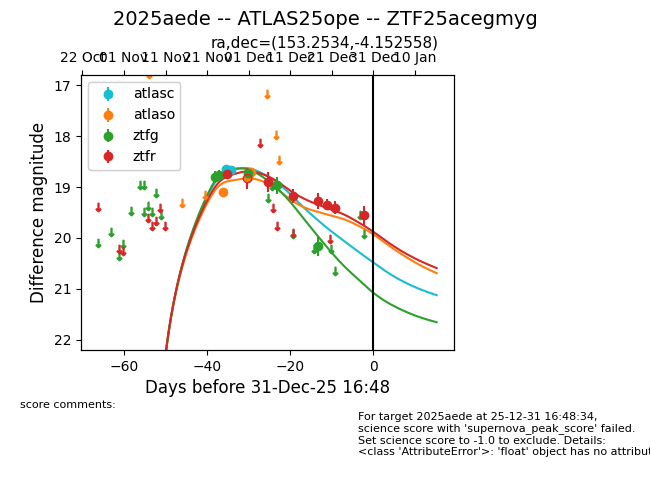
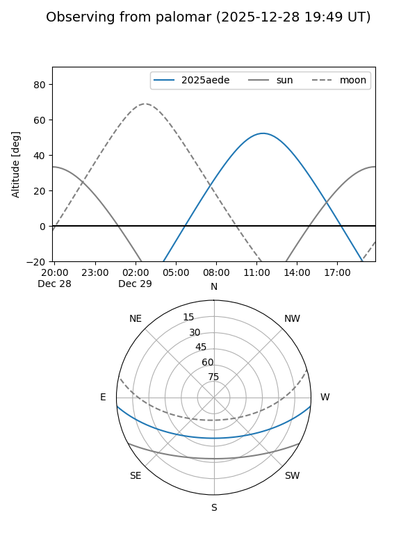
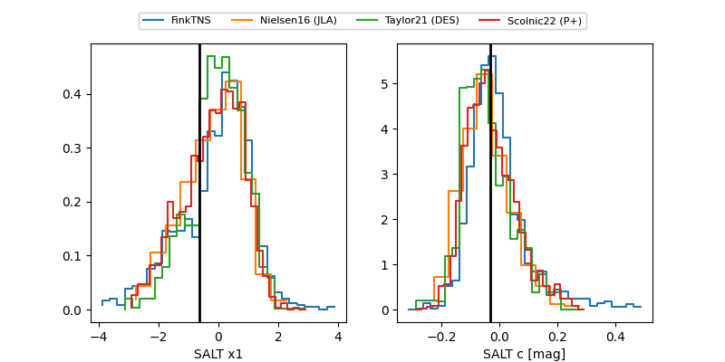

2025aede
Target 2025aede at 2025-12-30 16:29
Aliases and brokers:
FINK: fink-portal.org/ZTF25acegmyg
Lasair: lasair-ztf.lsst.ac.uk/objects/ZTF25acegmyg
ALeRCE: alerce.online/object/ZTF25acegmyg
TNS: wis-tns.org/object/2025aede
YSE: ziggy.ucolick.org/yse/transient_detail/2025aede
alt names
ZTF25acegmyg (ztf,fink_ztf)
2025aede (tns,yse)
ATLAS25ope (atlas)
Coordinates:
equatorial (ra, dec) = 153.2534,-4.15256
equatorial (HMS+DMS) = 10:13:00.83,-04:09:09.21
galactic (l, b) = (246.0535,+40.60714)
Flags:
Photometry:
last atlasc=18.66, atlaso=18.71, ztfg=20.16, ztfr=19.55
3 atlasc, 3 atlaso, 5 ztfg, 7 ztfr detections
Lightcurve

Visibility


Additional plots
